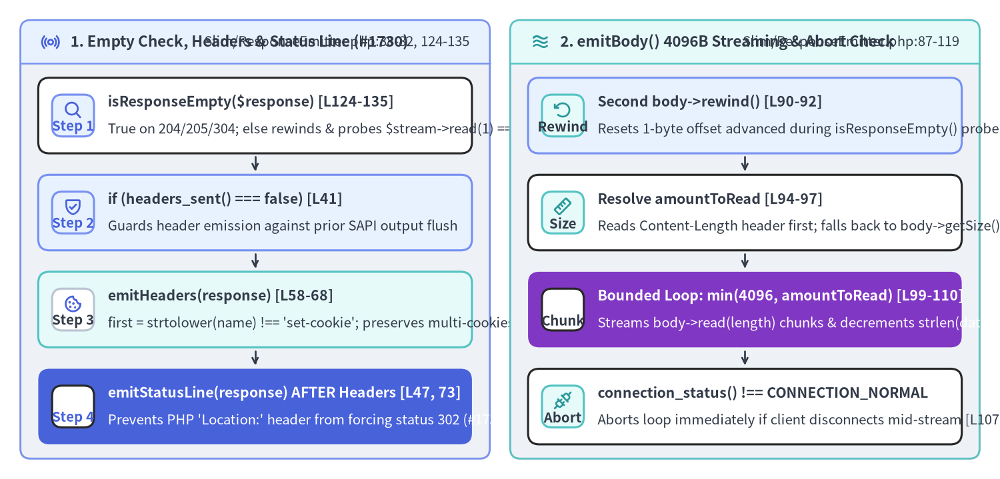
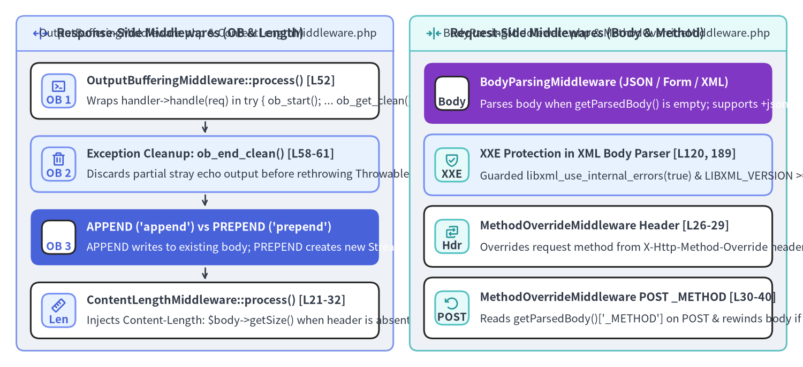

ResponseEmitter, Chunked SAPI Streaming & OutputBuffering Internals
At the end of every HTTP lifecycle in Slim\App::run() (Slim/App.php:186-196), Slim must bridge two fundamentally different worlds: the immutable, stateless PSR-7 ResponseInterface value object returned by $this->handle($request), and PHP's stateful SAPI output buffer and global header stack (header(), headers_sent(), echo, connection_status()). This final chapter dissects Slim\ResponseEmitter (Slim/ResponseEmitter.php, 137 lines / 92 LOC) alongside Slim's four companion HTTP utility middlewares (OutputBufferingMiddleware, ContentLengthMiddleware, BodyParsingMiddleware, and MethodOverrideMiddleware).

Source Code
from drawlib.canvas import save, setup
from drawlib.icons import phosphor
from drawlib.smartarts import CardList, Panel
from drawlib.styles import Colors, Styles
setup(width=196, height=94, dpi=150)
# Left Panel: isResponseEmpty(), emitHeaders() & emitStatusLine()
p_left = Panel(
"1. Empty Check, Headers & Status Line (#1730)",
"Slim/ResponseEmitter.php:38-82, 124-135",
style=Styles.Neutral.patch(shape_r=2.0),
header_style=Styles.PrimaryNeutral.patch(shape_line_width=1.2),
text_style=Styles.DarkBold.patch(text_size=10.8),
description_style=Styles.Dark.patch(text_size=9.8),
icon=phosphor.broadcast,
icon_style=Styles.PrimaryBold,
header_variant="filled",
header_height=8.5,
)
p_left.draw((4.0, 4.0), width=92.0, height=86.0)
lx, lw, lh = p_left.get_content_box((4.0, 4.0), width=92.0, height=86.0, padding=(3.5, 2.8))
hdr_steps = CardList(
style=Styles.White,
text_style=Styles.DarkBold.patch(text_size=10.2),
description_style=Styles.Dark.patch(text_size=9.8),
badge_shape="rounded_rect",
badge_style=Styles.PrimaryNeutral,
badge_text_style=Styles.PrimaryBold.patch(text_size=9.8),
icon_style=Styles.PrimaryBold,
direction="vertical",
spacing=2.5,
show_arrows=True,
arrow_style=Styles.DarkBold.patch(line_arrow_head_scale=10, line_width=1.3),
)
hdr_steps.add(
"isResponseEmpty($response) [L124-135]",
"True on 204/205/304; else rewinds & probes $stream->read(1) === ''",
badge_text="Step 1",
icon=phosphor.magnifying_glass,
)
hdr_steps.add(
"if (headers_sent() === false) [L41]",
"Guards header emission against prior SAPI output flush",
badge_text="Step 2",
icon=phosphor.shield_check,
style=Styles.PrimaryNeutral,
)
hdr_steps.add(
"emitHeaders(response) [L58-68]",
"first = strtolower(name) !== 'set-cookie'; preserves multi-cookies",
badge_text="Step 3",
icon=phosphor.cookie,
style=Styles.SecondaryNeutral,
badge_style=Styles.White.patch(shape_line_color=Colors.Gray4),
badge_text_style=Styles.DarkBold.patch(text_size=9.8),
)
hdr_steps.add(
"emitStatusLine(response) AFTER Headers [L47, 73]",
"Prevents PHP 'Location:' header from forcing status 302 (#1730)",
badge_text="Step 4",
icon=phosphor.check_circle,
style=Styles.PrimaryFlat,
text_style=Styles.WhiteBold.patch(text_size=10.2),
description_style=Styles.White.patch(text_size=9.8),
badge_style=Styles.White,
badge_text_style=Styles.PrimaryBold.patch(text_size=9.8),
icon_style=Styles.WhiteBold,
)
hdr_steps.draw(xy=lx, width=lw, height=lh)
# Right Panel: emitBody() Chunked Streaming & Connection Abort
p_right = Panel(
"2. emitBody() 4096B Streaming & Abort Check",
"Slim/ResponseEmitter.php:87-119",
style=Styles.Neutral.patch(shape_r=2.0),
header_style=Styles.SecondaryNeutral.patch(shape_line_width=1.2),
text_style=Styles.DarkBold.patch(text_size=10.8),
description_style=Styles.Dark.patch(text_size=9.8),
icon=phosphor.waves,
icon_style=Styles.SecondaryBold,
header_variant="filled",
header_height=8.5,
)
p_right.draw((100.0, 4.0), width=92.0, height=86.0)
rx, rw, rh = p_right.get_content_box((100.0, 4.0), width=92.0, height=86.0, padding=(3.5, 2.8))
body_steps = CardList(
style=Styles.White,
text_style=Styles.DarkBold.patch(text_size=10.2),
description_style=Styles.Dark.patch(text_size=9.8),
badge_shape="rounded_rect",
badge_style=Styles.SecondaryNeutral,
badge_text_style=Styles.DarkBold.patch(text_size=9.8),
icon_style=Styles.SecondaryBold,
direction="vertical",
spacing=2.5,
show_arrows=True,
arrow_style=Styles.DarkBold.patch(line_arrow_head_scale=10, line_width=1.3),
)
body_steps.add(
"Second body->rewind() [L90-92]",
"Resets 1-byte offset advanced during isResponseEmpty() probe!",
badge_text="Rewind",
icon=phosphor.arrow_counter_clockwise,
style=Styles.PrimaryNeutral,
)
body_steps.add(
"Resolve amountToRead [L94-97]",
"Reads Content-Length header first; falls back to body->getSize()",
badge_text="Size",
icon=phosphor.ruler,
)
body_steps.add(
"Bounded Loop: min(4096, amountToRead) [L99-110]",
"Streams body->read(length) chunks & decrements strlen(data)",
badge_text="Chunk",
icon=phosphor.lightning,
style=Styles.AccentFlat,
text_style=Styles.WhiteBold.patch(text_size=10.2),
description_style=Styles.White.patch(text_size=9.8),
badge_style=Styles.White,
badge_text_style=Styles.DarkBold.patch(text_size=9.8),
icon_style=Styles.WhiteBold,
)
body_steps.add(
"connection_status() !== CONNECTION_NORMAL",
"Aborts loop immediately if client disconnects mid-stream [L107, 114]",
badge_text="Abort",
icon=phosphor.plugs,
)
body_steps.draw(xy=rx, width=rw, height=lh)
save()
1. Inside ResponseEmitter::emit() (Slim/ResponseEmitter.php:26-136)
When App::run() (Slim/App.php:193-195) finishes executing $response = $this->handle($request), it instantiates new ResponseEmitter() (defaulting to $this->responseChunkSize = 4096) and calls $responseEmitter->emit($response):
// Slim/ResponseEmitter.php:38-53
public function emit(ResponseInterface $response): void
{
$isEmpty = $this->isResponseEmpty($response);
if (headers_sent() === false) {
$this->emitHeaders($response);
// Set the status _after_ the headers, because of PHP's "helpful" behavior with location headers.
// See https://github.com/slimphp/Slim/issues/1730
$this->emitStatusLine($response);
}
if (!$isEmpty) {
$this->emitBody($response);
}
}
Four subtle SAPI engineering details in ResponseEmitter deserve close attention:
1. Why isResponseEmpty() Reads 1 Byte and Why emitBody() Must Rewind Twice (Lines 89-92, 124-135)
// Slim/ResponseEmitter.php:124-135
public function isResponseEmpty(ResponseInterface $response): bool
{
if (in_array($response->getStatusCode(), [204, 205, 304], true)) {
return true;
}
$stream = $response->getBody();
$seekable = $stream->isSeekable();
if ($seekable) {
$stream->rewind();
}
return $seekable ? $stream->read(1) === '' : $stream->eof();
}
- RFC Status Short-Circuit (line 125): HTTP
204 No Content,205 Reset Content, and304 Not Modifiedresponses must never include a message body, even if the underlying PSR-7 stream contains bytes. - Why
$stream->read(1) === ''Instead of$stream->eof()?: In PHP streams (php://temporphp://memory),feof()only returnstrueafter a read operation attempts to read past the end of the stream; a newly written, rewound empty stream haseof() === falseuntilread(1)is attempted! - Why
emitBody()Rewinds Again (lines 90–92): For a non-empty seekable stream,isResponseEmpty()consumes the first byte ($stream->read(1)), advancing the stream cursor to offset1. Therefore,emitBody()must call$body->rewind()a second time at line 91 so byte0is not dropped!
2. Set-Cookie Multi-Header Preservation (Slim/ResponseEmitter.php:58-68)
// Slim/ResponseEmitter.php:58-68
private function emitHeaders(ResponseInterface $response): void
{
foreach ($response->getHeaders() as $name => $values) {
$first = strtolower($name) !== 'set-cookie';
foreach ($values as $value) {
$header = sprintf('%s: %s', $name, $value);
header($header, $first);
$first = false;
}
}
}
PHP's header(string $header, bool $replace = true) replaces any existing header of the same name when $replace is true.
- For standard headers (e.g.
Cache-ControlorX-Custom),$firststarts astrueso the first PSR-7 header value overwrites any default header set by PHP SAPI, and$first = falseon subsequent loop iterations appends additional values. - For
Set-Cookie,$firststarts asfalse(strtolower($name) !== 'set-cookie') soheader('Set-Cookie: ...', false)never overwrites cookies emitted earlier viasetcookie()or multipleSet-Cookieheaders on the PSR-7 response.
3. Why emitStatusLine() Runs After emitHeaders() (Issue #1730, Lines 42-48, 73-82)
Whenever PHP's header() function sees a Location: ... header and the current SAPI status code is 200, PHP's C SAPI layer automatically forces the status code to 302 Found. If a route returns 201 Created with a Location: /users/42 header (or 303 See Other / 307 Temporary Redirect) and emitStatusLine() ran before emitHeaders(), PHP's header('Location: ...') side effect could clobber the intended status code. Calling emitStatusLine() after emitHeaders() with explicit third parameter $response->getStatusCode() (header($statusLine, true, $response->getStatusCode()), line 81) guarantees the PSR-7 status code always wins.
4. Bounded Chunk Streaming & Client Disconnect Detection (Slim/ResponseEmitter.php:94-118)
Instead of calling echo (string) $response->getBody() (which would buffer an entire multi-megabyte file download into PHP memory at once), emitBody() reads at most $this->responseChunkSize (4096 bytes) per iteration and checks if (connection_status() !== CONNECTION_NORMAL) { break; } after every echo, halting stream reads immediately if the HTTP client closes the TCP socket.
2. OutputBufferingMiddleware & Built-In HTTP Utility Middlewares
In addition to RoutingMiddleware and ErrorMiddleware, Slim\Middleware\* provides four specialized PSR-15 middlewares that sanitize and normalize requests and responses around the pipeline:

Source Code
from drawlib.canvas import save, setup
from drawlib.icons import phosphor
from drawlib.smartarts import CardList, Panel
from drawlib.styles import Colors, Styles
setup(width=196, height=90, dpi=150)
# Left Panel: OutputBufferingMiddleware & ContentLengthMiddleware (Response Path)
p_left = Panel(
"Response-Side Middlewares (OB & Length)",
"OutputBufferingMiddleware.php & ContentLengthMiddleware.php",
style=Styles.Neutral.patch(shape_r=2.0),
header_style=Styles.PrimaryNeutral.patch(shape_line_width=1.2),
text_style=Styles.DarkBold.patch(text_size=10.8),
description_style=Styles.Dark.patch(text_size=9.8),
icon=phosphor.arrows_out_line_horizontal,
icon_style=Styles.PrimaryBold,
header_variant="filled",
header_height=8.5,
)
p_left.draw((4.0, 4.0), width=92.0, height=82.0)
lx, lw, lh = p_left.get_content_box((4.0, 4.0), width=92.0, height=82.0, padding=(3.5, 3.0))
ob_list = CardList(
style=Styles.White,
text_style=Styles.DarkBold.patch(text_size=10.2),
description_style=Styles.Dark.patch(text_size=9.8),
badge_shape="rounded_rect",
badge_style=Styles.PrimaryNeutral,
badge_text_style=Styles.PrimaryBold.patch(text_size=9.8),
icon_style=Styles.PrimaryBold,
direction="vertical",
spacing=2.6,
show_arrows=True,
arrow_style=Styles.DarkBold.patch(line_arrow_head_scale=10, line_width=1.3),
)
ob_list.add(
"OutputBufferingMiddleware::process() [L52]",
"Wraps handler->handle(req) in try { ob_start(); ... ob_get_clean(); }",
badge_text="OB 1",
icon=phosphor.terminal_window,
)
ob_list.add(
"Exception Cleanup: ob_end_clean() [L58-61]",
"Discards partial stray echo output before rethrowing Throwable",
badge_text="OB 2",
icon=phosphor.trash,
style=Styles.PrimaryNeutral,
)
ob_list.add(
"APPEND ('append') vs PREPEND ('prepend')",
"APPEND writes to existing body; PREPEND creates new StreamFactory body",
badge_text="OB 3",
icon=phosphor.git_fork,
style=Styles.PrimaryFlat,
text_style=Styles.WhiteBold.patch(text_size=10.2),
description_style=Styles.White.patch(text_size=9.8),
badge_style=Styles.White,
badge_text_style=Styles.PrimaryBold.patch(text_size=9.8),
icon_style=Styles.WhiteBold,
)
ob_list.add(
"ContentLengthMiddleware::process() [L21-32]",
"Injects Content-Length: $body->getSize() when header is absent",
badge_text="Len",
icon=phosphor.ruler,
)
ob_list.draw(xy=lx, width=lw, height=lh)
# Right Panel: BodyParsingMiddleware & MethodOverrideMiddleware (Request Path)
p_right = Panel(
"Request-Side Middlewares (Body & Method)",
"BodyParsingMiddleware.php & MethodOverrideMiddleware.php",
style=Styles.Neutral.patch(shape_r=2.0),
header_style=Styles.SecondaryNeutral.patch(shape_line_width=1.2),
text_style=Styles.DarkBold.patch(text_size=10.8),
description_style=Styles.Dark.patch(text_size=9.8),
icon=phosphor.arrows_in_line_horizontal,
icon_style=Styles.SecondaryBold,
header_variant="filled",
header_height=8.5,
)
p_right.draw((100.0, 4.0), width=92.0, height=82.0)
rx, rw, rh = p_right.get_content_box((100.0, 4.0), width=92.0, height=82.0, padding=(3.5, 3.0))
req_list = CardList(
style=Styles.White,
text_style=Styles.DarkBold.patch(text_size=10.2),
description_style=Styles.Dark.patch(text_size=9.8),
badge_shape="rounded_rect",
badge_style=Styles.SecondaryNeutral,
badge_text_style=Styles.DarkBold.patch(text_size=9.8),
icon_style=Styles.SecondaryBold,
direction="vertical",
spacing=2.6,
)
req_list.add(
"BodyParsingMiddleware (JSON / Form / XML)",
"Parses body when getParsedBody() is empty; supports +json/+xml (RFC 6839)",
badge_text="Body",
icon=phosphor.brackets_curly,
style=Styles.AccentFlat,
text_style=Styles.WhiteBold.patch(text_size=10.2),
description_style=Styles.White.patch(text_size=9.8),
badge_style=Styles.White,
badge_text_style=Styles.DarkBold.patch(text_size=9.8),
icon_style=Styles.WhiteBold,
)
req_list.add(
"XXE Protection in XML Body Parser [L120, 189]",
"Guarded libxml_use_internal_errors(true) & LIBXML_VERSION >= 20900 check",
badge_text="XXE",
icon=phosphor.shield_check,
style=Styles.PrimaryNeutral,
)
req_list.add(
"MethodOverrideMiddleware Header [L26-29]",
"Overrides request method from X-Http-Method-Override header",
badge_text="Hdr",
icon=phosphor.swap,
)
req_list.add(
"MethodOverrideMiddleware POST _METHOD [L30-40]",
"Reads getParsedBody()['_METHOD'] on POST & rewinds body if at EOF",
badge_text="POST",
icon=phosphor.arrow_counter_clockwise,
)
req_list.draw(xy=rx, width=rw, height=lh)
save()
OutputBufferingMiddleware: APPEND vs PREPEND (Slim/Middleware/OutputBufferingMiddleware.php:52-74)
If legacy PHP code or a third-party library uses echo or print directly during request handling, stray bytes sent to PHP's output buffer before ResponseEmitter::emit() can trigger headers_sent() === true or corrupt JSON responses. OutputBufferingMiddleware captures all stray output inside a nested output buffer:
// Slim/Middleware/OutputBufferingMiddleware.php:52-74
public function process(ServerRequestInterface $request, RequestHandlerInterface $handler): ResponseInterface
{
try {
ob_start();
$response = $handler->handle($request);
$output = ob_get_clean();
} catch (Throwable $e) {
ob_end_clean();
throw $e;
}
if (!empty($output)) {
if ($this->style === static::PREPEND) {
$body = $this->streamFactory->createStream();
$body->write($output . $response->getBody());
$response = $response->withBody($body);
} elseif ($this->style === static::APPEND && $response->getBody()->isWritable()) {
$response->getBody()->write($output);
}
}
return $response;
}
OutputBufferingMiddleware::APPEND(default, lines 68–70): Appends captured$outputto the existing$response->getBody()stream ifisWritable()istrue.OutputBufferingMiddleware::PREPEND(lines 64–67): Allocates a fresh PSR-7 stream via$this->streamFactory->createStream(), writes$output . $response->getBody(), and returns$response->withBody($body).- Exception Safety (lines 58–61): If any downstream middleware or route throws a
Throwable,ob_end_clean()discards the buffered output before rethrowing$esoErrorMiddlewarerenders a clean error payload uncorrupted by partial output.
Summary of Companion Utility Middlewares
Middleware Class (Slim\Middleware\*) |
Source File & LOC | Internal Mechanism & Ordering Requirement |
|---|---|---|
BodyParsingMiddleware |
Slim/Middleware/BodyParsingMiddleware.php (202 lines / 126 LOC) |
Strips ; charset=... parameters in getMediaType() (lines 177–187), checks exact $this->bodyParsers[$mediaType], falls back to RFC 6839 +suffix (application/vnd.api+json -> application/json, lines 150–156), and validates that the parser returns array|object|null (lines 162–166). |
MethodOverrideMiddleware |
Slim/Middleware/MethodOverrideMiddleware.php (45 lines / 31 LOC) |
Inspects X-Http-Method-Override header first (lines 26–29), or inspects $request->getParsedBody()['_METHOD'] on POST requests (lines 30–35). Must be placed outside RoutingMiddleware and inside BodyParsingMiddleware so getParsedBody() is already populated before RoutingMiddleware dispatches! |
ContentLengthMiddleware |
Slim/Middleware/ContentLengthMiddleware.php (34 lines / 20 LOC) |
Post-processes $response = $handler->handle($request) by reading $size = $response->getBody()->getSize() and attaching Content-Length: (string) $size when hasHeader('Content-Length') is false. |
Return to Overview or Explore Companion Portals
- Return to the Architecture Overview to review the end-to-end PSR-15 pipeline.
- Visit the Slim 4 User Guide for production application patterns, Slim 4 API Reference for searchable class signatures, or the PNI501 Diagnostic Report for the complete AST, PCOV coverage (
99.4%), and security audit.